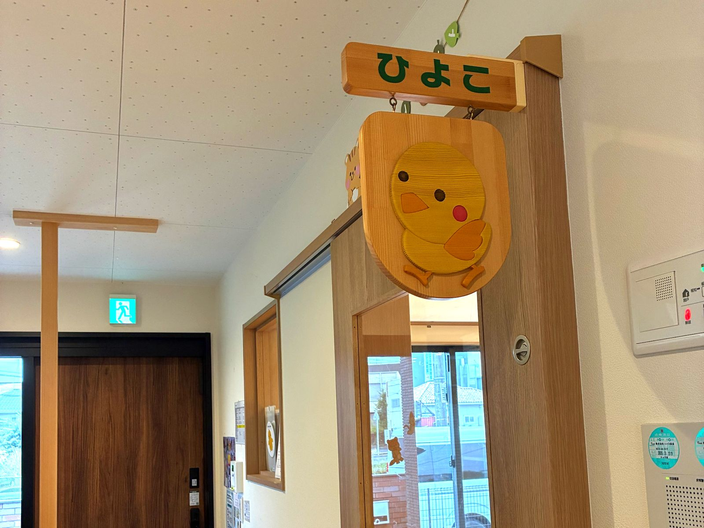

かみのて保育園
岐阜県可児市今渡3番5
企業主導型保育園 KAMINOTE NURSERY
0歳〜2歳のお子さまの、企業主導型保育園です。
7:00〜20:00まで、園に直接お申し込みいただけます。
企業主導型保育園
自治体を通さず、園に直接お申し込みいただけます。お住まいの地域や勤務先を問わない地域枠のほか、提携企業にお勤めの方の企業枠、自社枠があり、保育料が異なります。入園料はいただきません。
看護師が常駐していて、保育中の急な体調不良にも対応します。病児保育室も併設しています。

保育料（月額の目安）